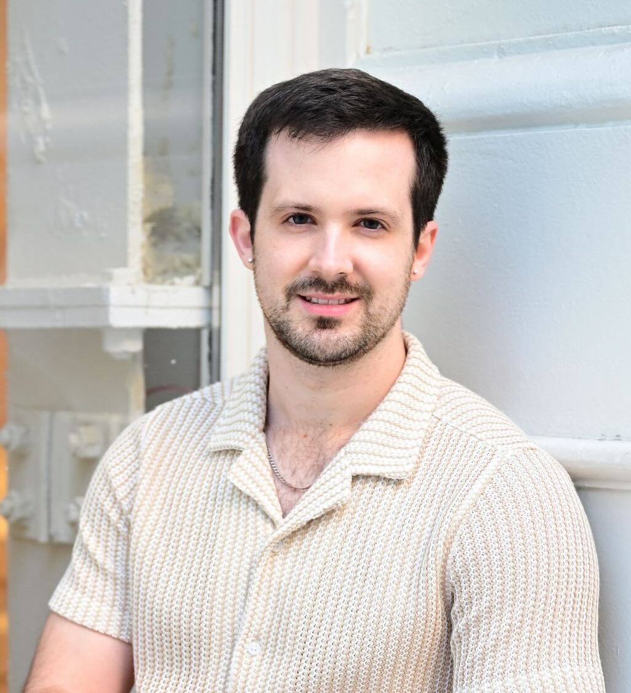

About

I'm a fifth-year computer science PhD candidate at the University of Iowa, where I am a member of the Computational Logic Center. I work under the supervision of Dr. Cesare Tinelli and Dr. Omar Chowdhury (@ Stony Brook University).
Broadly speaking, I am interested in automated techniques for detecting security vulnerabilities in computational systems, or proving their absence. In my work, I employ and develop tools and techniques from the field of automated reasoning (including SMT solving, model checking, deductive verification, logic programming, and so on).
Research Interests
- Automated reasoning
- Computer security
Publications
-
ICSE '26Parse this! Summoning Context-Sensitive Inputs with Goblin pdfR. Lorch, D. Dar, C. Tinelli, and O. Chowdhury
[Summary ▾]
In this paper, I develop a new approach for context-sensitive input generation (i.e., given a context-sensitive grammar G, find x such that x \in G). Such an input generation tool can be used to help fuzz software with complex inputs (e.g. pdf parsers), as one can encode the input specification as a context-sensitive grammar and then use the tool to generate system inputs. We applied this approach in S&P '25 (see below) to help discover security vulnerabilities in a widely-used implementation of the Wi-Fi SAE handshake protocol.
-
Systems Engineering '26Transforming Natural Language Requirements to Formalism Using LLMs pdfB. Meng, R. Lorch, K. Siu, M. Durling, S. Varanasi, S. Paul, and A. Moitra
-
S&P '25SAECRED: A State-Aware, Over-the-Air Protocol Testing Approach for Discovering Parsing Bugs in SAE Handshake Implementations of COTS Wi-Fi Access Points pdfD. Dar, R. Lorch, A. Sadeghi, V. Sorcigli, H. Gollier, C. Tinelli, M. Vanhoef, and O. Chowdhury
-
NFM '25TRACE: Toolkit for Requirements Analysis Capture and Elicitation pdfB. Meng, S. Varanasi, R. Lorch, A. Moitra, K. Siu, S. Paul, M. Durling, N. Beniwal, and N. Visnevski
-
RAID '24A Comprehensive, Automated Security Analysis of the Uptane Automotive Over-the-Air Update Framework pdfR. Lorch, D. Larraz, C. Tinelli, and O. Chowdhury
[Summary ▾]
In this paper, I explore novel techniques for interoperation between cryptographic protocol verifiers (e.g., Tamarin) and general-purpose model checkers (e.g., Kind 2) aimed towards the discovery of design-level vulnerabilities in security protocols.
-
FormaliSE '24Formal Methods in Requirements Engineering: Survey and Future Directions pdfR. Lorch, B. Meng, K. Siu, A. Moitra, M. Durling, S. Paul, S. Varanasi, and C. McMillan
-
FMCAD '23CRV: Automated Cyber-Resiliency Reasoning for System Design Models pdfD. Larraz, R. Lorch, M. Yahyazadeh, F. Arif, O. Chowdhury, and C. Tinelli
-
AJC '22Constructing (3, b)-sudoku pair Latin squares pdfB. Carrigan, D. Diaz, J. Hammer, J. Lorch, and R. LorchAustralasian Journal of Combinatorics
-
BICA '21List colorings count rokudoku-pair squares pdfB. Carrigan, J. Hammer, J. Lorch, R. Lorch, and C. OwensBulletin of the Institute of Combinatorics and its Applications
A full publication record can be found on Google Scholar.
Teaching
Below is a list of courses I have taught in various capacities.
-
UIowa Teaching Assistant
-
CS:4420, Spring '22Artificial Intelligence
-
CS:5810, Fall '21Formal Methods in Software Engineering
-
CS:2640, Fall '21Computer Organization
-
-
Grinnell College Class Mentor
-
CSC-207, Spring '21Object-oriented data structures and algorithms
-
-
Grinnell College Peer Tutor
-
CSC-161, Spring '21Imperative problem solving and data structures
-
Contact
You can reach me at robert-lorch@uiowa.edu, or find me on GitHub and Google Scholar.